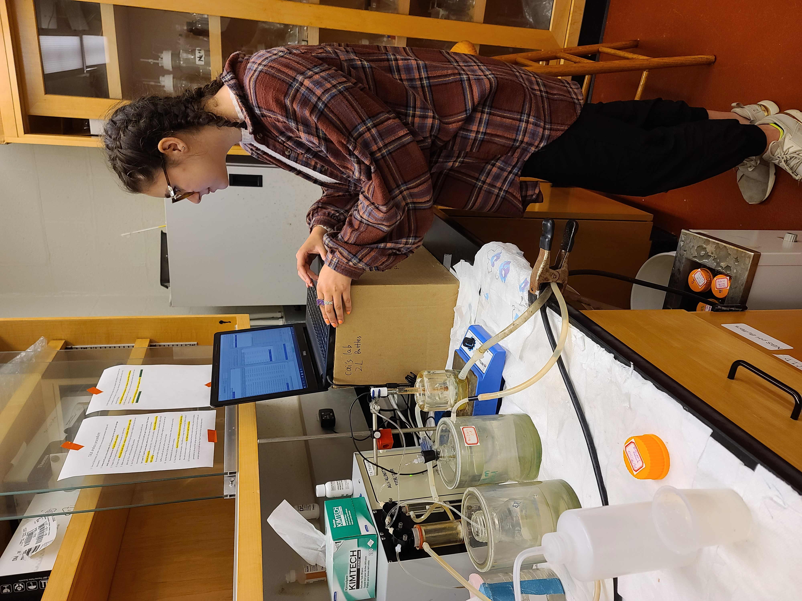

How Flood and Ebb tides relate to Alkalinity-Salinity relationships in the Murderkill River
 Objectives:
There are two main endmembers here, the Delaware Bay which dominates on the flood and high tides, and also estuarine flow, which dominates on the ebb tide. Using this information, I can create a relationship between these endmembers and how they affect TA-S in the Murderkill River.
Methodology:
In the lab I have been working on running samples from various different rivers, creeks, coasts, and estuaries using a Gran Alkalinity Titrator. I ran 100+ samples in the past couple weeks, averaging 10-12 per day, including calibration, conditioning and standardizing. Our target analysis goal is each run measurement of each sample to be within 0.1% of each other, which means I run each sample 2-4 times, depending on the quality of my initial sample results. This is my first real lab experience other than general chemistry and biology labs, so I am very excited about the work I’m doing and I am very passionate about aquatic carbon cycles.